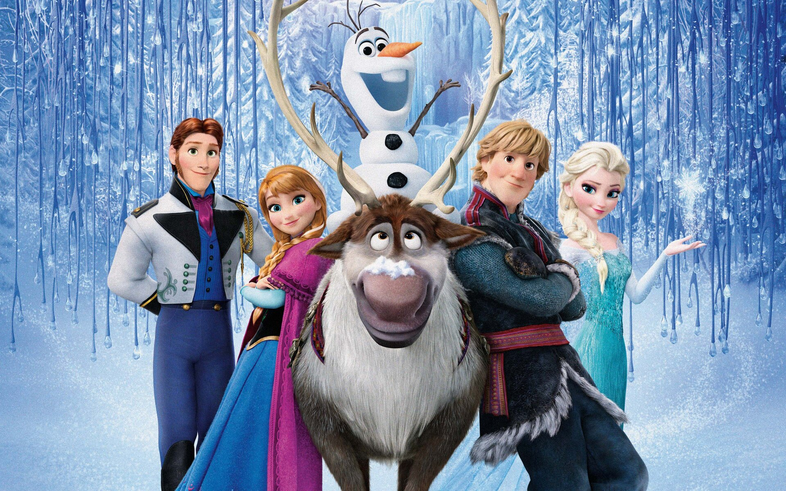
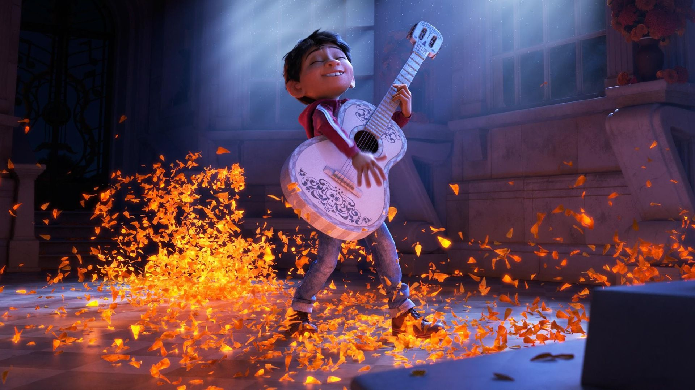
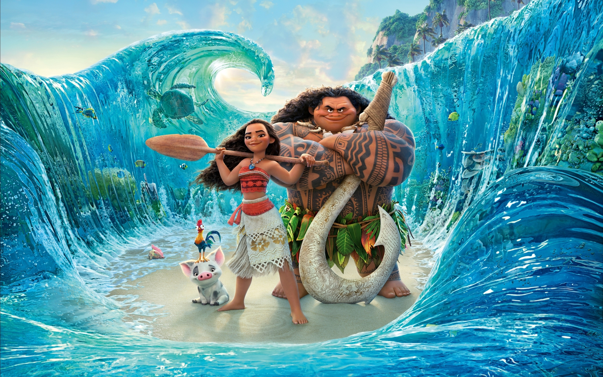
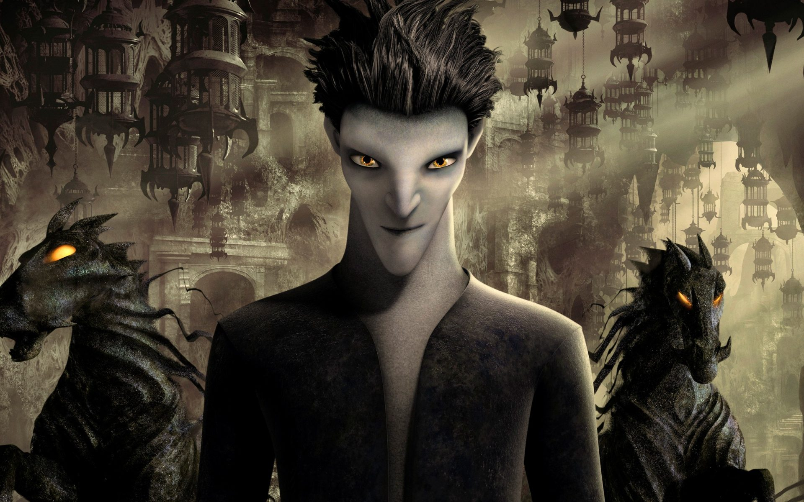

FROZEN
2013 .
PG .
1h 42m ANIMATION _ Comedy - ADVENTURE Directors
Chris Buck & Jennifer Lee
Frozen is a 2013 American computer-animated musical fantasy film produced by Walt Disney Animation Studios and released by Walt Disney Pictures. The 53rd Disney animated feature film, it is inspired by Hans Christian Andersen's
1844 fairy tale The Snow Queen. The film was directed by Chris Buck and Jennifer Lee and produced by Peter Del Vecho, from a screenplay written by Lee, and a story by Buck, Lee, and Shane Morris. It stars the voices of Kristen Bell,
Idina Menzel, Josh Gad, Jonathan Groff and Santino Fontana. Frozen tells the story of Princess Anna as she teams up with an iceman, his reindeer, and a snowman to find her estranged sister Elsa, whose icy powers have inadvertently trapped their
kingdom in eternal winter.
Frozen underwent several story treatments before being commissioned in 2011 as a screenplay by Lee. Kristen Anderson-Lopez and Robert Lopez were hired to write the songs for the film, while Christophe Beck composed the score.
Frozen premiered at the El Capitan Theatre in Los Angeles on November 19, 2013, and went into its general theatrical release on November 27. It was praised for its visuals, screenplay, themes, music, and voice acting; some film critics consider Frozen
to be Disney's best animated film since the studio's renaissance era. Frozen received two awards at the 86th Academy Awards, and numerous other accolades.
During its theatrical run, the film was a significant commercial success, earning $1.280 billion in worldwide box office revenue, overtaking Toy Story 3 to become the highest-grossing animated film of all time, and carried its
position until it was overtaken by the remake of The Lion King in 2019. It also became the fifth highest-grossing film of all time and the highest-grossing film of 2013. By January 2015, the film became the best-selling Blu-ray Disc in the United States,
which resulted in the film launching a franchise, including an animated short in 2015, an animated featurette in 2017, and a feature-length sequel, Frozen II, in November 2019.
|

COCO 2017 .
PG .
1h 45m .
Animation - Adventure - Comedy Directors:
Lee Unkrich & Adrian Molina
Coco is a 2017 American computer-animated fantasy film produced by Pixar Animation Studios and released by Walt Disney Pictures. Based on an original idea by Lee Unkrich, it is directed by him and co-directed by Adrian Molina.
The film's voice cast stars Anthony Gonzalez, Gael García Bernal, Benjamin Bratt, Alanna Ubach, Renée Victor, Ana Ofelia Murguía and Edward James Olmos. The story follows a 12-year-old boy named Miguel (Gonzalez) who is accidentally transported to the Land of the Dead, where he seeks the help of his deceased musician
great-great-grandfather to return him to his family among the living and to reverse his family's ban on music.
The concept for Coco is inspired by the Mexican holiday Day of the Dead. The film was scripted by Molina and Matthew Aldrich from a story by Unkrich, Jason Katz, Aldrich, and Molina. Pixar began developing the animation in 2016; Unkrich and some of the film's crew visited Mexico for research. Composer Michael Giacchino, who had worked on prior Pixar
animated features, composed the score. With a cost of $175–225 million, Coco is the first film with a nine-figure budget to feature an all-Latino principal cast.
Coco premiered on October 20, 2017, during the Morelia International Film Festival in Morelia, Mexico. It was theatrically released in Mexico the following week, the weekend before Día de Muertos, and in the United States on November 22, 2017. The film was praised for its animation, voice acting, music, visuals, emotional story, and respect for Mexican culture.
It grossed over $807 million worldwide, becoming the 16th highest-grossing animated film ever at the time of its release. Coco received two awards at the 90th Academy Awards, and numerous other accolades. The film was chosen by the National Board of Review as the Best Animated Film of 2017.
|

MOANA 2016 .
PG .
1h 47m .
Adventure - Animation - Comedy Directors:
Ron Clements , John Musker & Don Hall
Moana is a 2016 American computer-animated musical action-adventure fantasy film produced by Walt Disney Animation Studios and released by Walt Disney Pictures.
The 56th Disney animated feature film, it was directed by John Musker and Ron Clements, co-directed by Chris Williams and Don Hall, and produced by Osnat Shurer,
from a screenplay written by Jared Bush, and a story by Clements, Musker, Williams, Hall, Pamela Ribon,
and the writing team of Aaron and Jordan Kandell.
The film introduces Auliʻi Cravalho as the voice of Moana and also features the ensemble voices of Dwayne Johnson, Rachel House, Temuera Morrison, Jemaine Clement, Nicole Scherzinger, and Alan Tudyk.
The film features original songs written by Lin-Manuel Miranda, Opetaia Foa'i and Mark Mancina, and an orchestral score also composed by Mancina. It tells the story of Moana, the strong-willed daughter of a chief of a Polynesian village,
who is chosen by the ocean itself to reunite a mystical relic with the goddess Te Fiti. When a blight strikes her island, Moana sets sail in search of Maui, a legendary demigod, in the hope of returning the relic to Te Fiti and saving her people.
The plot is original, but takes inspiration from Polynesian myths.
Moana premiered during the AFI Fest at the El Capitan Theatre in Los Angeles on November 14, 2016, and was released theatrically in the United States on November 23. The film received positive reviews from critics,
who particularly praised its animation, music, and vocal performances. The film went on to gross over $645 million worldwide. Along with Zootopia, it marked the first time since 2002 that Walt Disney Animation Studios released
two feature films in the same year, after Lilo & Stitch and Treasure Planet. At the 89th Academy Awards, the film received two nominations for Best Animated Feature and Best Original Song ("How Far I'll Go").
|

THE RISE OF THE GUARDIANS2012 . PG . 1h 37m
Animation - Action - Adventure Director:
Peter Ramsey
Rise of the Guardians is a 2012 American 3D computer-animated fantasy action-adventure film produced by DreamWorks Animation and distributed by Paramount Pictures.
The film was directed by Peter Ramsey (in his feature directorial debut) from a screenplay by David Lindsay-Abaire, based on the book series The Guardians of Childhood
and the short film The Man in the Moon by William Joyce. It stars the voices of Chris Pine, Alec Baldwin, Jude Law, Isla Fisher, and Hugh Jackman. The film tells a story about
Guardians Santa Claus, the Tooth Fairy, the Easter Bunny, and the Sandman, who enlist Jack Frost to stop the evil Pitch Black from engulfing the world in darkness in a fight of dreams.
Rise of the Guardians was released in the United States on November 21, 2012. It grossed $306.9 million worldwide against a budget of $145 million, but lost an estimated $87 million due to marketing
and distribution costs. It was nominated for the Golden Globe Award for Best Animated Feature Film and the Annie Award for Best Animated Feature.
It was the last DreamWorks Animation film to be distributed by Paramount Pictures. Starting with The Croods (2013), 20th Century Fox would distribute DreamWorks' films until Captain Underpants: The First Epic Movie (2017).
|